GIS Automation · Geospatial AI · Python Development
Kansas City, Missouri
I'm a GIS and geospatial automation engineer focused on building scalable workflows, AI-driven systems, and Python-based automation tools for infrastructure and utility analysis.
My work bridges GIS, computer vision, and software engineering to extract actionable intelligence from LiDAR point clouds, aerial imagery, and engineering datasets to power real-world infrastructure decisions.
Currently building Viewer 2.0, a web-based LiDAR point cloud viewer with AI-powered utility pole detection, running on React, FastAPI, and MapLibre GL.
Web-based LiDAR point cloud viewer for utility pole detection and corridor review. Migrates the visualization and interaction layer from a desktop application to a modern full-stack web platform while preserving all proven detection logic and reviewer workflow.
Live demo — Viewer 2.0 in action
A custom ArcGIS Pro extension that acts as an intelligent assistant inside the ArcGIS Pro environment, understanding the active project, layers, and geodatabases to execute geoprocessing from natural language.
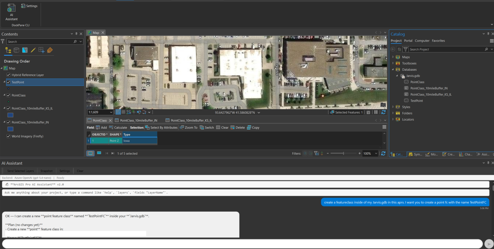
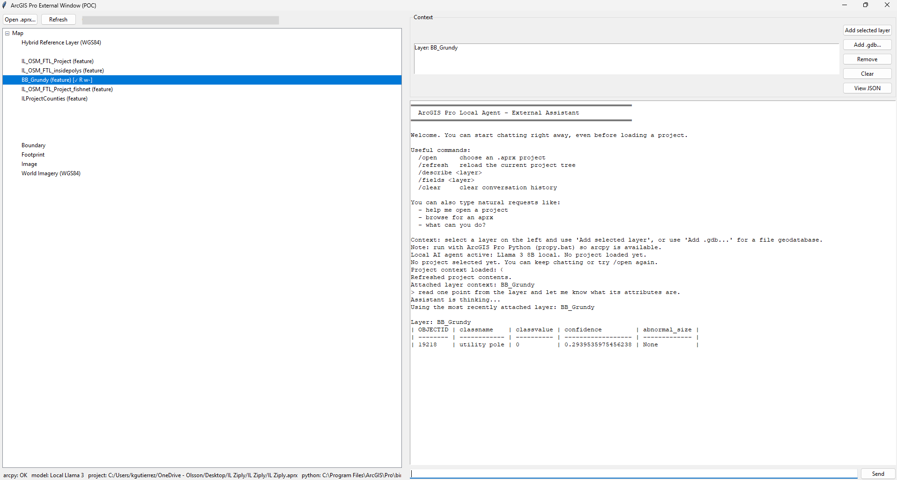
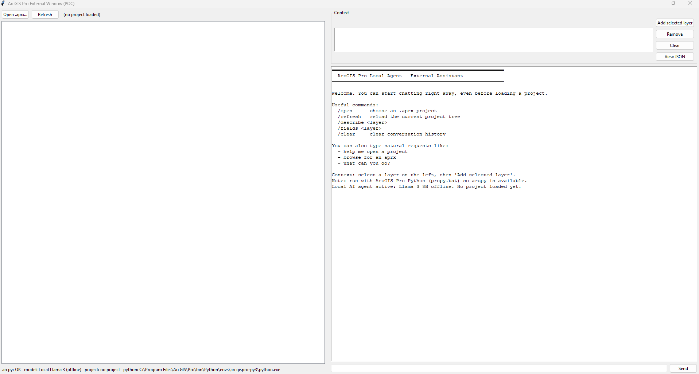
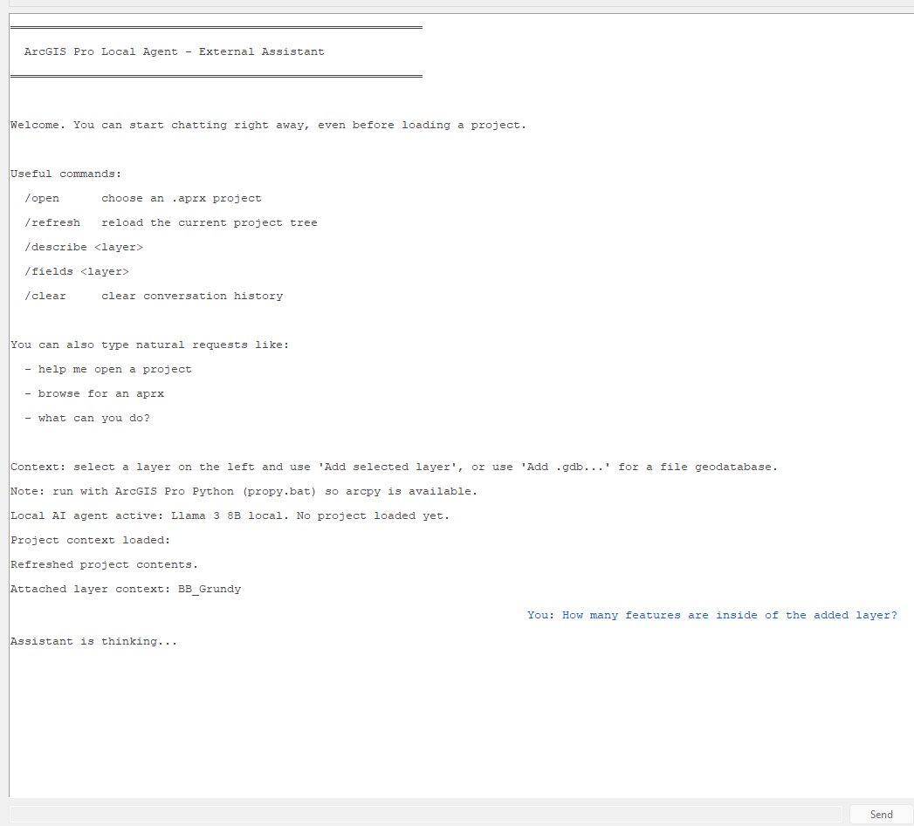
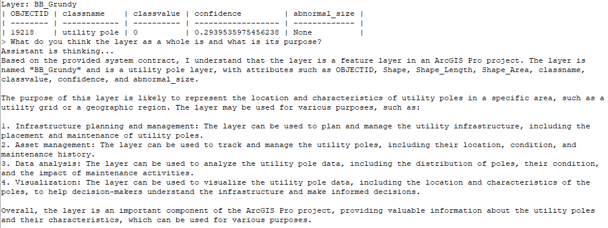
.aprx project state, layers, and geodatabasesAI system for detecting utility poles in street-level and roadway imagery using a custom-trained YOLOv8 object detection model with automated logging and video inference support.
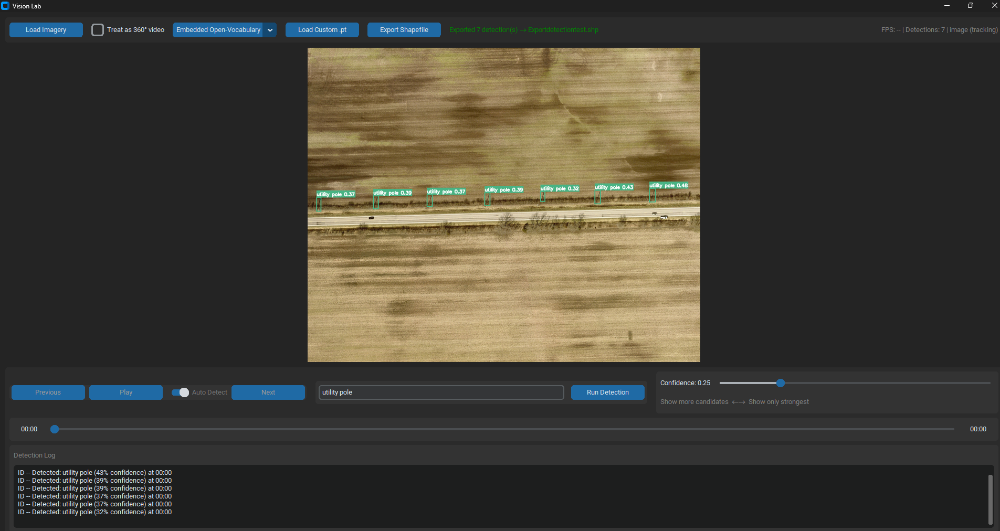
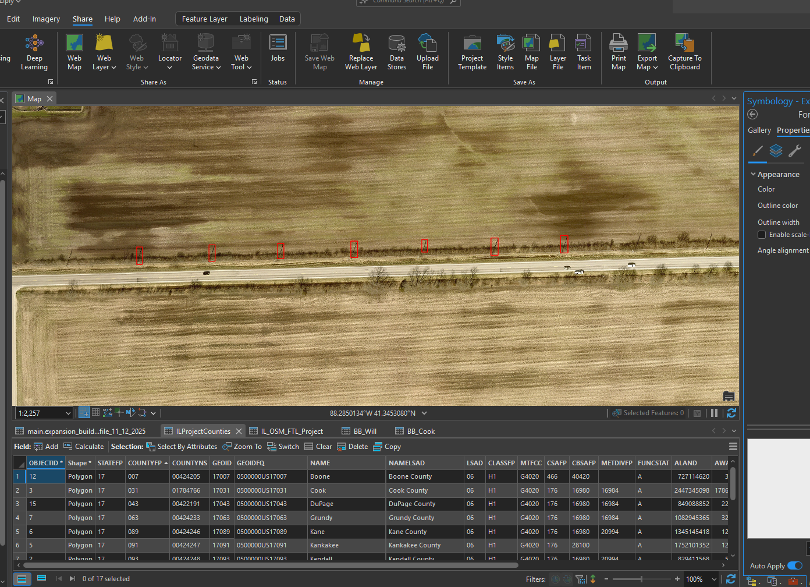
ArcGIS Pro automation system for updating route classifications based on spatial relationships and infrastructure detection results, replacing manual GIS workflows with batch-automated processing.
Desktop system for analyzing LAS and E57 point cloud data for 3D spatial intelligence, infrastructure classification, and utility object detection. The detection core that powers Viewer 2.0.
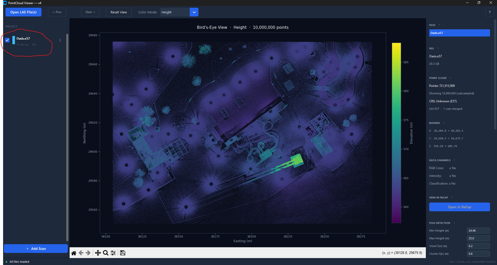
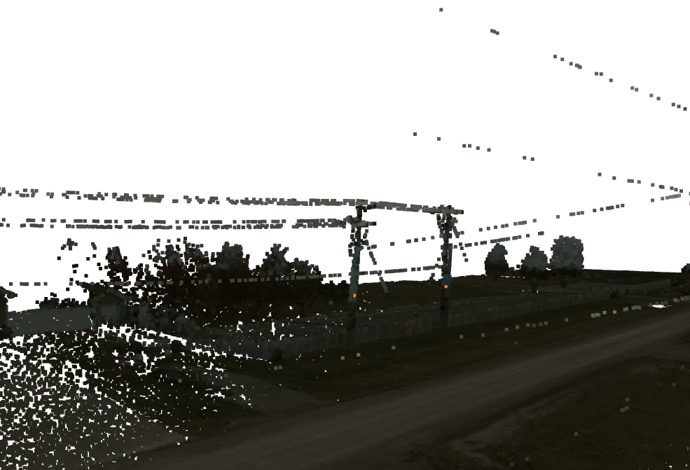
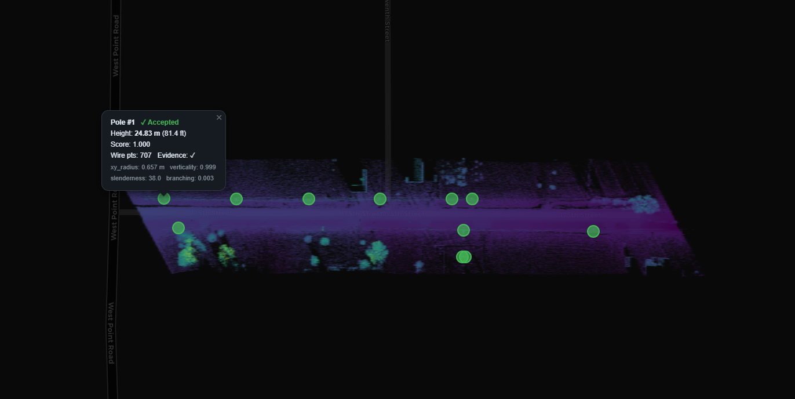
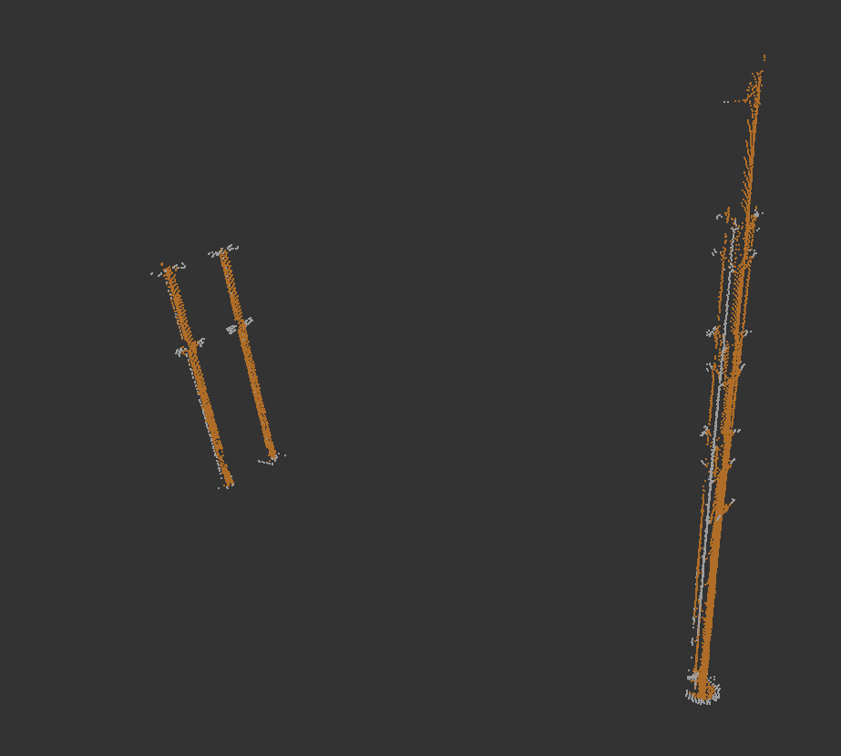
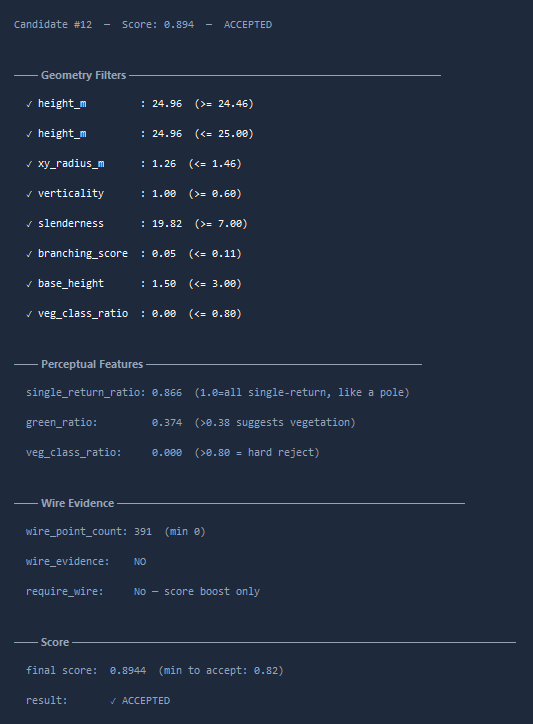
I'm open to discussing projects, collaborations, or geospatial engineering opportunities.